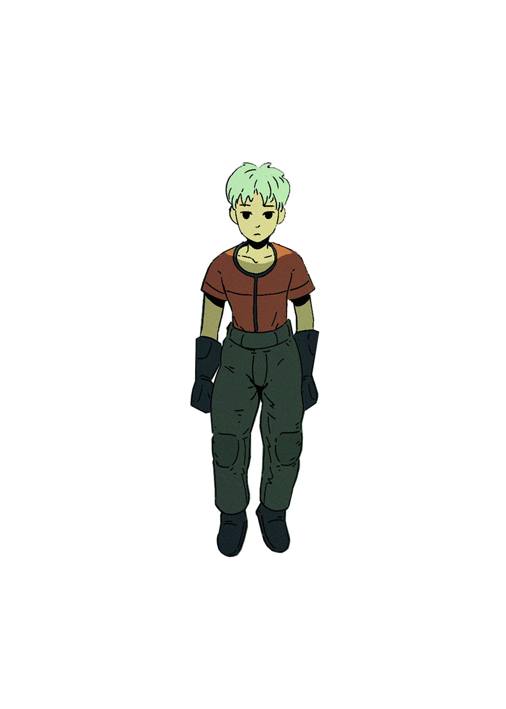

Zach Comisar
These are my favorite things!
Favorite Things
Types of Music
- House Music
- Alternative Rock
- Techno
- Pop Music
Types of Food
- Italian
- Chinese
- American
- German
Hobbies
- Kristi Yang
- An audio/visual project I am working on that takes concepts and ideas from Japanese anime culture. It combines music and visuals to create a better live preformance experience.

Zee (Main Character)
Octocat

Octocat (Octopus/Cat)
Links
Soundcloud
Return to top